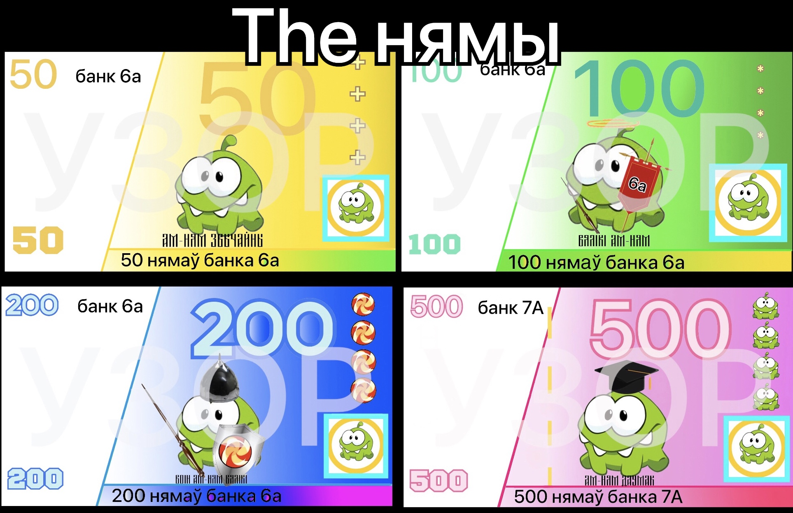
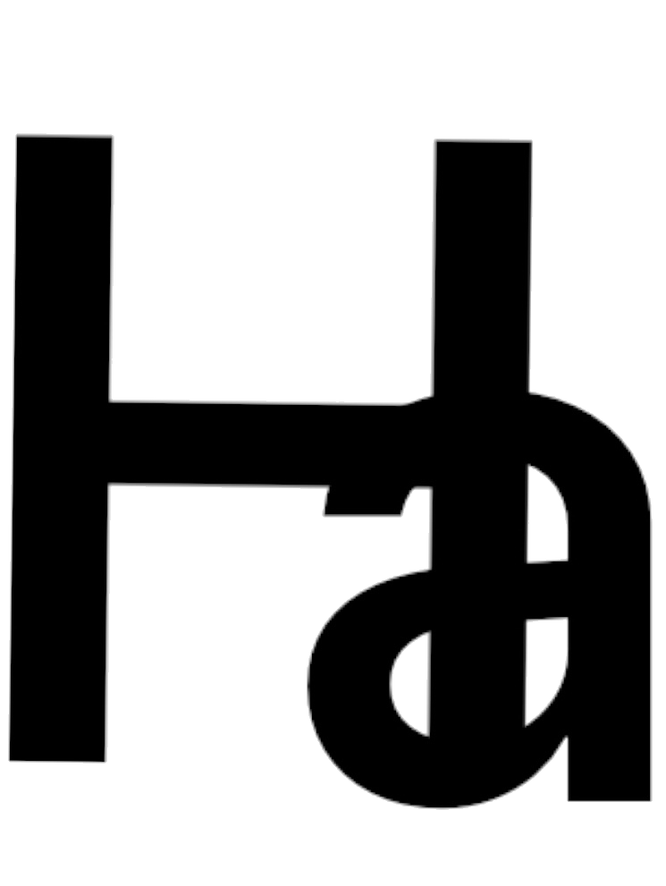

Ням(множны лiк - нямы) - бонусы па бел. мове.
Першая купюра 100 нямаў была надрукавана 21 кастрычнiка 2022г. Тады яна была створана па
прыколу, як бутафорыя сапраўдных грошаў. Але, калi яе паказалi Вадзiму Михайлавiчу, ен прыдумаў
выкарыстоўваць нямы, як бонусы. Увесь 6"А" прагаласаваў "За" гэту сiстэму. Затым быў пробны перыад -
былi ўведзены ў зварот чорна-белыя нямы. Гiсторыя не захавала дату, калi гэта было, але прыблiзна
гэты перыад працягваўся 4-5 месяцаў. За гэты час яшчэ сiмвал для нямаў прыдумалi. Трэцяга мая былi надрукаваны
каляровыя нямы. The ў гэтым навучальным годзе ў зварот увайшли новыя купюры 500 нямаў. Дызайнерам ўсiх купюр з`яўляецца
Дзякевiч Максiм


The графiчны сiмвал няма:
Лiтара Н - першая лiтара ў слове "ням", лiтара А - лiтара нашага класа. Сiмвал
расшыфроўваецца: Ням 7А
Разарваныя нямы. Шо рабiць?
The правiла а падраных нямах:
Калi ў цябе выпадкова парвалася купюра, не трэба шукаць блiжэйшую лужу, каб утапiцца.
Ты яшчэ можаш абмяняць яе ў Вадзiма Мiхайлавiча "У банке" на адзнаку, або на цэлую купюру, але калi на ёй цэлая роспiсь Вадзiма Мiхайлавiча i
ў цябе ёсць усе кавалачкi ад парванай купюры, т.е. 100%. Калi ты -10iq недаумак и спецыяльна рвеш купюры, яны ў банк не прымаюцца. ЗА НАЎМЫСНАЕ ПАШКОДЖАННЕ КУПЮР
Ў БАНК ЯНЫ НЕ ПРЫМАЮЦЦА!